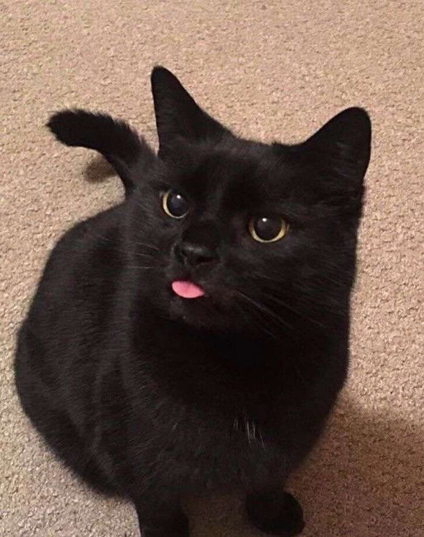
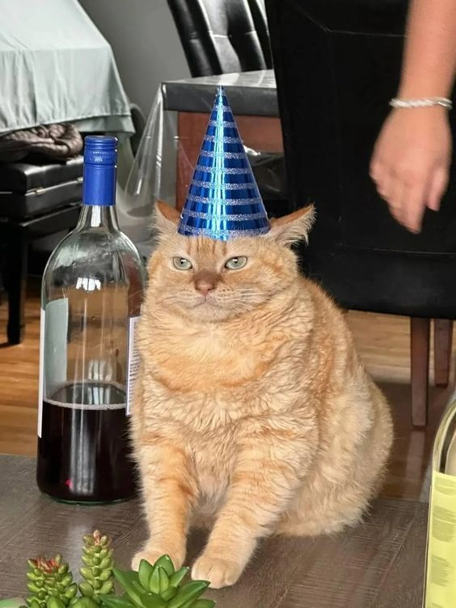
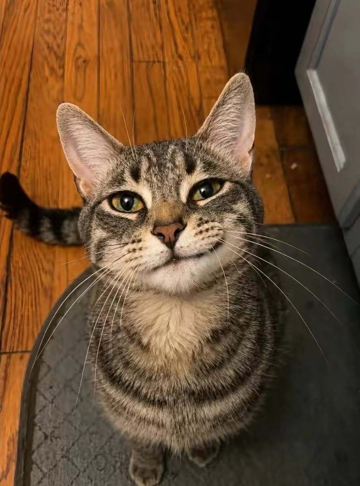
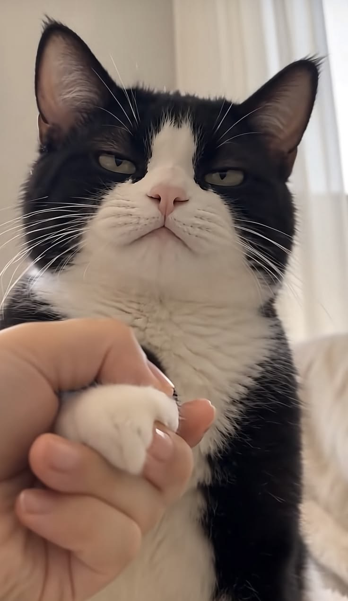

Por que os gatos são fascinantes?
Os gatos são animais domesticados que ainda preservam diversos comportamentos associados aos seus ancestrais, como explorar territórios, procurar locais seguros e perseguir pequenos movimentos.
Seus sentidos também contribuem para a maneira como interagem com o ambiente. Audição, visão, olfato e estruturas sensoriais como os bigodes ajudam o gato a perceber o que acontece ao seu redor.
Além das características físicas, cada gato possui uma personalidade própria. Idade, experiências, ambiente e socialização podem influenciar a forma como ele reage a pessoas, outros animais e diferentes situações.
O contexto é tão importante quanto observar o comportamento.
Você sabia?
Horas de sono
Gatos passam muitas horas dormindo ou descansando. O sono ajuda na recuperação de energia e faz parte natural da rotina desses animais.
Sentidos aguçados
Os gatos possuem sentidos bastante desenvolvidos. A audição e estruturas sensoriais como os bigodes ajudam na percepção do ambiente.
Amor por caixas
Caixas podem funcionar como esconderijos e oferecer ao gato um espaço protegido para descansar ou observar o ambiente.
Patinhas
As patas são importantes para locomoção, exploração, brincadeiras e outras atividades do cotidiano.
Ronronar
O ronronar pode aparecer durante momentos de conforto, mas também em situações de tensão. Por isso, deve ser observado junto com outros sinais.
Comunicação
Gatos utilizam cauda, orelhas, olhos, postura corporal e vocalizações para se comunicar.
5 características dos gatos
Algumas características dos gatos:
- São animais muito observadores;
- Possuem excelente audição;
- Utilizam a cauda na comunicação;
- Gostam de explorar ambientes;
- Possuem hábitos próprios de higiene;
- Apresentam personalidades diferentes;
Como entender um gato?
Observe os sinais corporais e considere sempre o contexto:
Cauda levantada
Uma cauda levantada pode aparecer quando o gato está confortável ou demonstrando uma postura amigável. O contexto deve sempre ser considerado.
Orelhas e bigodes
A posição das orelhas e os movimentos dos bigodes ajudam a entender como o gato está reagindo ao ambiente.
Ronronar
O ronronar pode aparecer em momentos de conforto, mas também em situações de ansiedade ou desconforto.
Entrar em caixas
Espaços pequenos podem proporcionar sensação de segurança e permitir que o gato observe o ambiente de um local protegido.
Orelhas para trás
Orelhas voltadas para trás podem indicar medo, irritação ou desconforto, principalmente quando acompanhadas por outros sinais corporais.
Antes de interpretar um comportamento, observe o conjunto de sinais e o contexto.
Comportamentos curiosos
- Amassar cobertores ou superfícies (fazer "pãozinho");
- Derrubar objetos;
- Perseguir pequenos movimentos;
- Procurar lugares altos;
- Dormir em posições inesperadas;
Comparando algumas raças
| Raça | Origem | Pelagem | Características |
|---|---|---|---|
| Persa | Irã | Longa | Calmos e dóceis |
| Siamês | Tailândia | Curta | Comunicativos, inteligentes e ativos |
| Maine Coon | Estados Unidos | Longa | Amigáveis, inteligentes e sociáveis |
| Sphynx | Canadá | Pouca pelagem | Carentes, energéticos e sociáveis |
Galeria felina




Quer aprender mais?
Se você quiser aprofundar seus conhecimentos sobre comportamento, saúde e bem-estar felino, consulte fontes especializadas e confiáveis.
Conte para nós!
Você também gosta de gatos? Compartilhe uma curiosidade, conte um comportamento que já observou ou fale sobre o que mais chama sua atenção no universo felino.